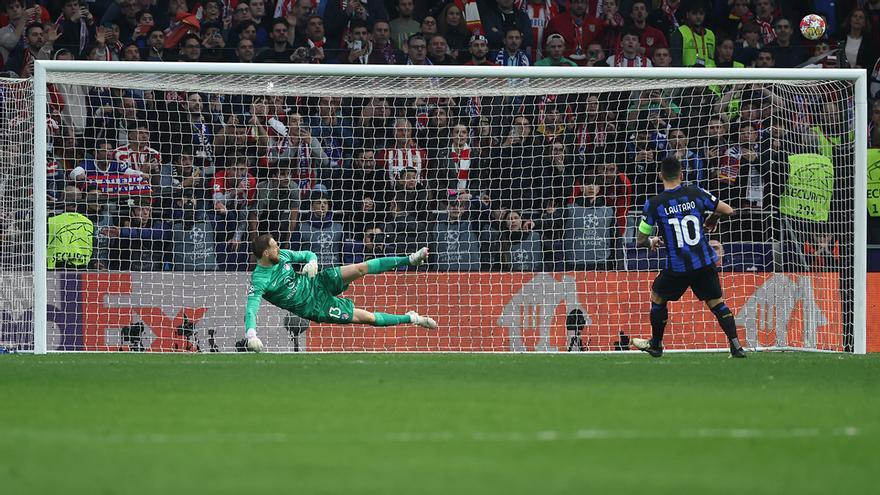

Los octavos de final de esta edición fueron sorprendentes e emocionantes, los equipos más importantes pasaron a la siguiente ronda y la sorprendente eliminación del Inter de Milán frente al Atlético de Madrid en la tanda de penaltis
La Lazio complicó el partido al Bayern de Munich, pero al final los alemanes salieron con la victoria

Equipos como el Inter de Milán y el Napoles fueron eliminados en esta ronda